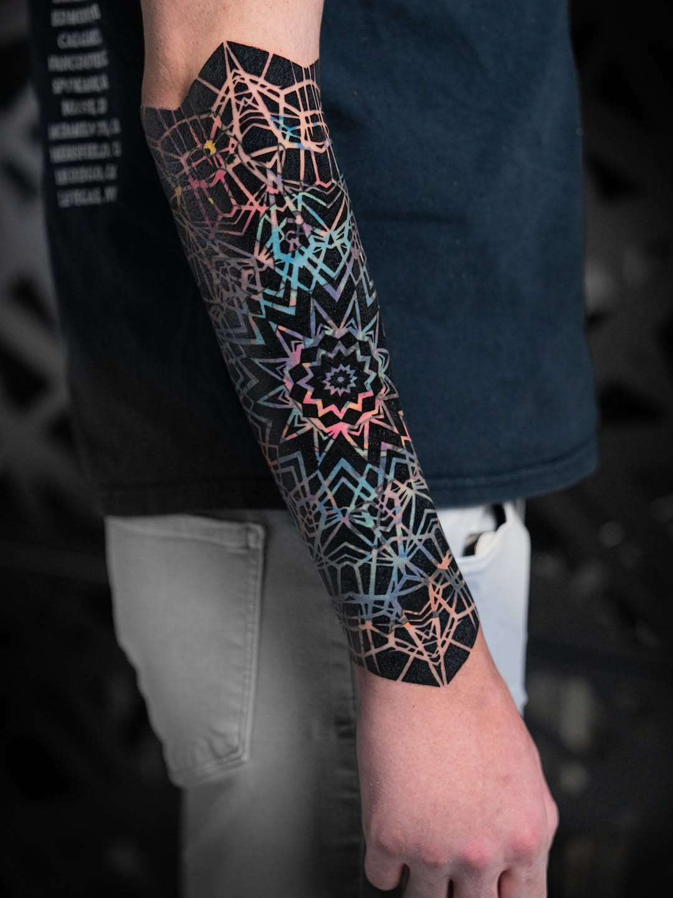
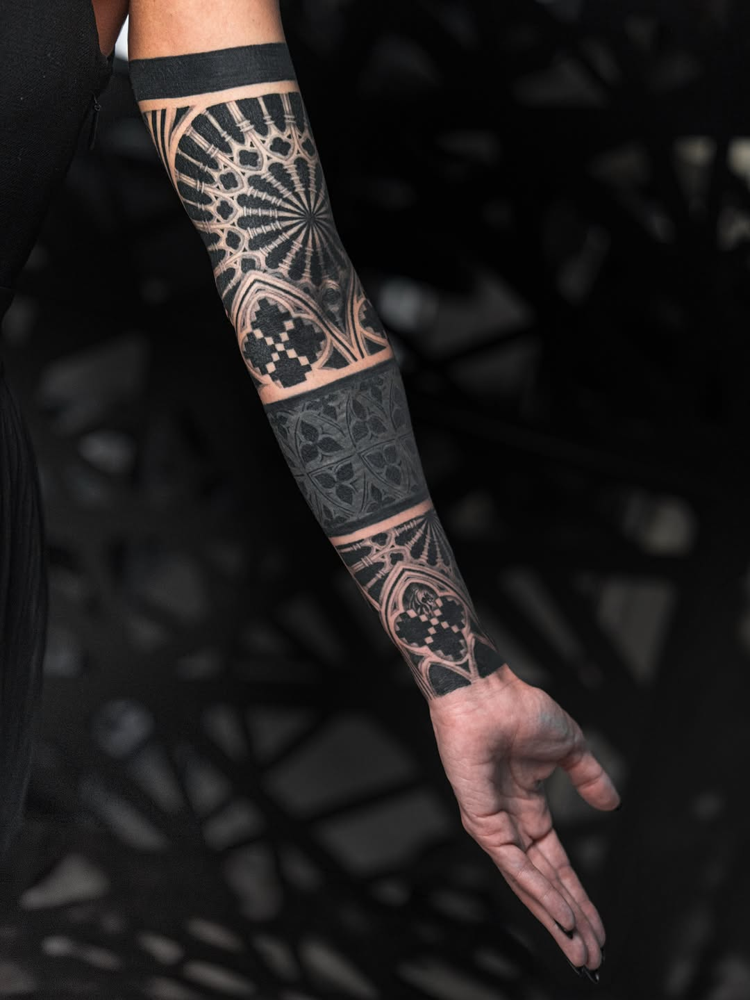
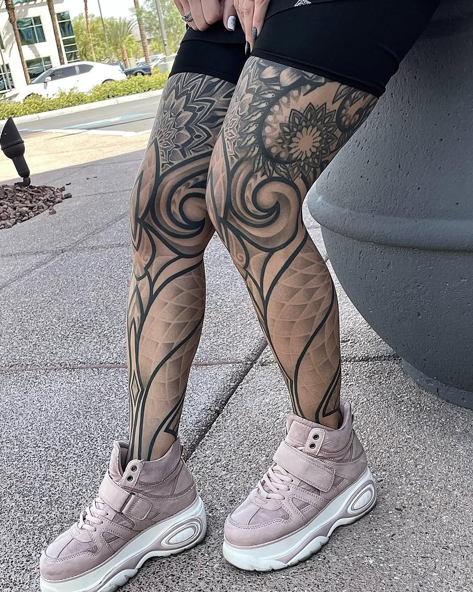
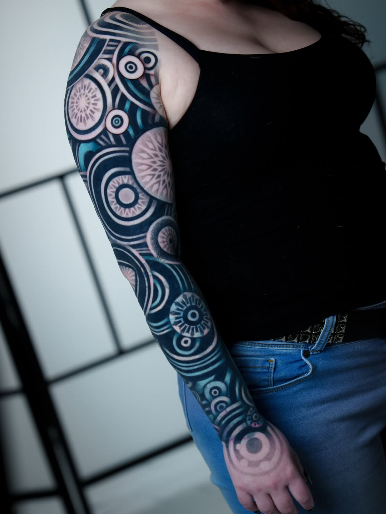
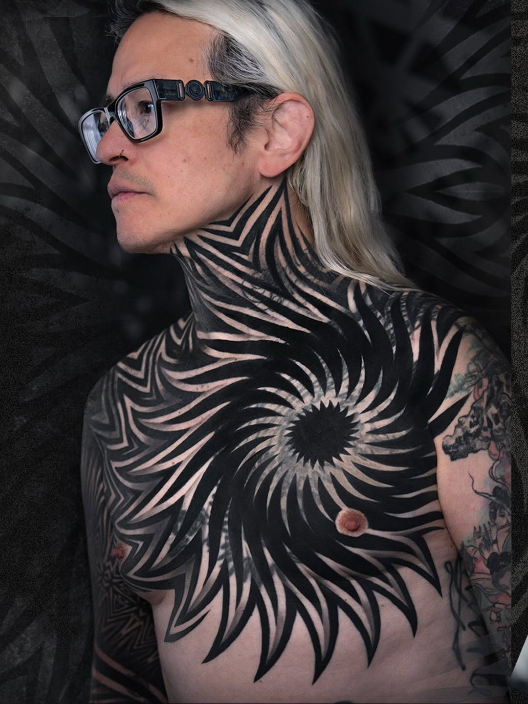

A long conversation with Ilya Cascad
On building a life across continents, launching Ornamentalika, symmetrical blackwork on asymmetrical bodies, and the underground scene that became a global movement.
"The style was unfamiliar to most people and visually very different. Ornamental tattooing was the first thing that genuinely felt like mine."
Q.01You started in Russia and ended up building a life in Las Vegas — completely different worlds. How did that journey happen?
I started tattooing professionally in Russia, and that is also where I found my direction as an artist and began working in ornamental tattooing. At that time, the style was still in its early stages. People called it different things — ornamental, geometry, blackwork — everything was mixed together. The scene itself was still very small and quite underground.
That was exactly what attracted me to it. I liked that the style was unfamiliar to most people and visually very different from everything else around it. Like most tattoo artists in the beginning, I experimented with many different styles, but ornamental tattooing was the first thing that genuinely felt like mine.
In Russia, I received my first awards, my first sponsorship from an ink company, and my first invitations to international tattoo conventions. That is also how I first came to America to present my work. After that, I started traveling constantly between countries, working conventions, traveling across Europe and the US. But over time, America felt closer to me than anywhere else in terms of energy and opportunities.
At the beginning of 2020, my family and I came to the US for a convention in Los Angeles, and after that we decided to spend a little time visiting Las Vegas. Right at that moment, COVID and the lockdowns began, and instead of a planned one month trip, we ended up stuck in Vegas for about four months. During that time, my family really fell in love with the city, the weather, and the overall rhythm of life here. At some point I realized that we genuinely wanted to try building our life in this place.
The move itself was definitely not easy. Different country, different language, completely different mentality. When you do not have your old friends, familiar environment, and other family members around you anymore, it creates a lot of internal pressure. There were moments of serious stress and emotional burnout. But at the same time, that experience changed me a lot, both as a person and in the way I approach my work and my life overall.
Q.02What does a typical day look like for you between tattooing, running Ornamentalika, family life, and everything you juggle in Vegas?
I feel very lucky because my wife is not only my manager and assistant, but also one of the biggest sources of inspiration in my work. We have really built everything together. She is also a tattoo artist herself, and over time she became not just part of the studio, but genuinely my colleague as well.
She helps me not only with the business and organizational side of things, but also takes part in the creative process itself. When I am creating new designs, especially large or complex projects, I always listen to her opinion and advice.
At the same time, she carries a huge amount of responsibility in everyday life — managing the studio, handling organizational tasks, taking care of our home, family, and child. Because of that, I actually have the time and mental space to fully focus on creating designs, developing ideas, and concentrating on the artistic side of my work.
At some point, all of this stopped feeling like a simple division of responsibilities and started feeling more like a real shared work and life as a team. And honestly, it would be much harder for me to do all of this alone.
Q.03Ornamentalika seems like it has built into something bigger — the IG page, the shop, the presence at conventions. What was the original idea behind it?
Originally, Ornamentalika was simply an Instagram page dedicated to tattoo artists working in ornamental styles, as well as people who were interested in that kind of tattooing.
Over time, it started growing far beyond just a social media page. After we opened our studio and began actively participating in conventions, the idea came up to bring ornamental artists together physically in one shared space. That is how the collaborative convention booths slowly started happening, along with communication, exchange of experience, and the feeling that together we were helping push this style forward.
At this point, it has become much more than just an Instagram page. It is a real international community. We meet every year at conventions, work together, reconnect with artists we already know, and meet new people as well.

Asymmetry is a very delicate balance. It can either beautifully enhance the anatomy, or completely work against it.
Q.04You run the Ornamentalika booth at Golden State Tattoo Convention every year. What goes into organizing that, and how do you balance your own tattooing with the logistics?
At the beginning, everything was much smaller. We started with only three artists, so organizing the booth was not that difficult yet.
A lot of the artists travel from different cities and countries, often bringing only the essentials with them, like machines and inks. I wanted to remove the stress of having to search around the convention for equipment or setup needs.
Over time, everything started growing. Every year more artists want to join, and naturally the organization becomes much more complex. Usually, preparation for the next convention starts almost immediately after the previous one ends. If everything is spread out over the course of the year, it becomes much easier to manage while still continuing my own tattoo work at the same time.
Q.05When you're tattooing — especially on chest pieces or big sleeves — do you work freehand on the body? How much happens beforehand versus on the skin itself?
Every project requires its own approach, so I do not really have one fixed system for working. If a project requires a freehand approach, then I draw directly on the body. If stencil placement works better, then I use stencil transfer. I try to use whatever tools or methods will help achieve the best result for that specific person and anatomy.
Very often, while tattooing, I end up discovering more interesting visual or compositional solutions in real time. When that happens, I adapt the design directly on the skin so that it feels as natural and organic to the body as possible.
Q.06Your work carries that balance of heavy black saturation alongside intricate geometric breakdowns. How do you keep transitions clean between those different visual layers?
When creating my designs, I usually start from my own visual instincts and personal perception first. For me, the internal feeling of balance is very important.
At the same time, I am constantly inspired by artists and tattooers working in similar directions. I pay a lot of attention to interesting technical solutions, approaches to composition, density, rhythm, and transitions between different visual layers. In the end, everything depends on the specific project, the idea behind it, and the feeling I want the piece to create.
From the archive



Q.07Geometric tattoo artists always talk about symmetry, but bodies are not symmetrical. How do you map a precise geometric design onto an asymmetrical surface?
Yes, symmetry on the human body is one of the most difficult parts of geometric tattooing, because the body itself is naturally asymmetrical.
But honestly, lately I have been thinking more and more that asymmetrical designs are actually even harder to create. Symmetry is naturally pleasing to the eye and automatically creates a sense of order and balance. Asymmetry, on the other hand, is a very delicate balance. A design like that can either beautifully enhance the anatomy and movement of the body, or completely work against it visually.
Q.08Vegas is such a specific scene for tattooing. Do you stay rooted there, or do you guest internationally?
When I first spent time in Las Vegas, I completely fell in love with the place. There was something about the energy of the city and the pace of life there that immediately connected with me.
Later, I had the opportunity to open my own studio, and from that moment a big part of my focus shifted toward developing the studio and the projects around it. These days I travel for guest spots much less often because I have a lot of responsibilities and projects here. Overall, America is now my main base, and I am more interested in growing here and helping ornamental tattooing become more visible within the American tattoo scene.
As for the Las Vegas tattoo community itself, it is extremely large and diverse. There are many incredibly strong artists here, and the tattoo culture itself is very varied.

Inspire each other, but don't copy each other.
Cascad arrived in Las Vegas in early 2020 and decided to stay — pulled in by the city's energy and the opportunity to build something from scratch. Since then he's opened his own studio, grown Ornamentalika from an Instagram page into an international community of ornamental tattoo artists, and become a fixture at Golden State Tattoo Convention alongside collaborator Raul Wesche.
His work sits at the intersection of heavy black saturation and intricate geometric breakdown — spirals, mandalas, cathedral tracery, and sacred geometry rendered at body scale. The chest piece visible here is a case study in how ornamental blackwork transforms anatomy into architecture.
Q.09Being married and raising a family while running a tattoo career and a brand — how do you protect your focus and avoid burning out?
As I mentioned before, my biggest source of support in everything is my wife. She takes on a huge amount of responsibility and gives me the ability to focus on creativity, personal growth, and my work as a tattoo artist.
But the most important thing is that we are not only working together, we are a family. I think that is what really helps us handle the constant workload, fast pace, and amount of responsibility that comes with this lifestyle. Of course, like anyone else, we have moments of exhaustion and burnout. But we genuinely love what we do.
Q.10What is a project or a type of work you have not done yet but really want to? Where are you and Ornamentalika heading next?
Lately, I have become more interested in larger, more complex, and more experimental projects, especially ones connected to how tattooing interacts with anatomy and the movement of the body.
As for Ornamentalika, I want to continue developing it as an international community and a space for people who connect with this aesthetic. I feel like ornamental tattooing, geometry tattoo, blackwork, dark lettering — it is continuing to gain momentum and evolve more and more, especially within the American tattoo scene.
I have a lot of ideas and future plans, but I usually prefer talking about them once they become reality.
Q.11Anything else you want to add or say to the OMF Geometry community?
I would simply like to thank everyone who supports the ornamental and geometry tattoo scene and continues to take interest in these directions.
I clearly remember the time when this whole scene was just beginning and there was nowhere near the amount of information, equipment, or opportunities that exist today. Dark lettering, neotribal, freehand-based styles, Suminagashi-inspired work, and many other directions are all continuing to evolve and expand the boundaries of blackwork and ornamental tattoo culture.
Probably the main thing I would want to say to artists is to keep inspiring each other, but not copying each other.
Recorded Summer 2026 · Las Vegas, Nevada
{kind=link}
{kind=link}
{kind=link}
{kind=link}